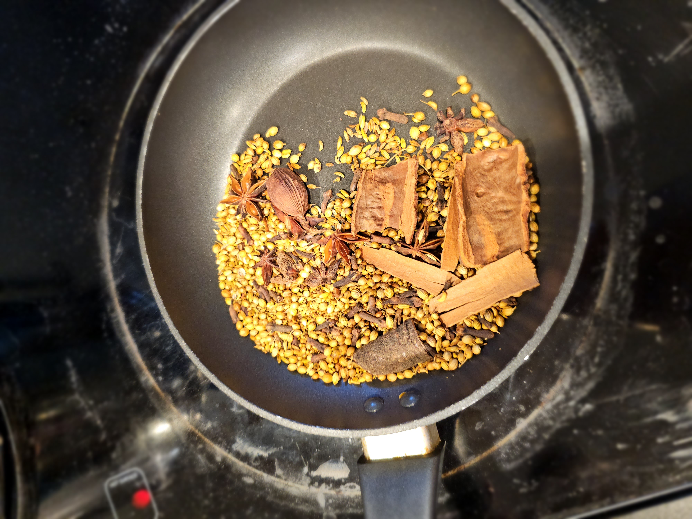
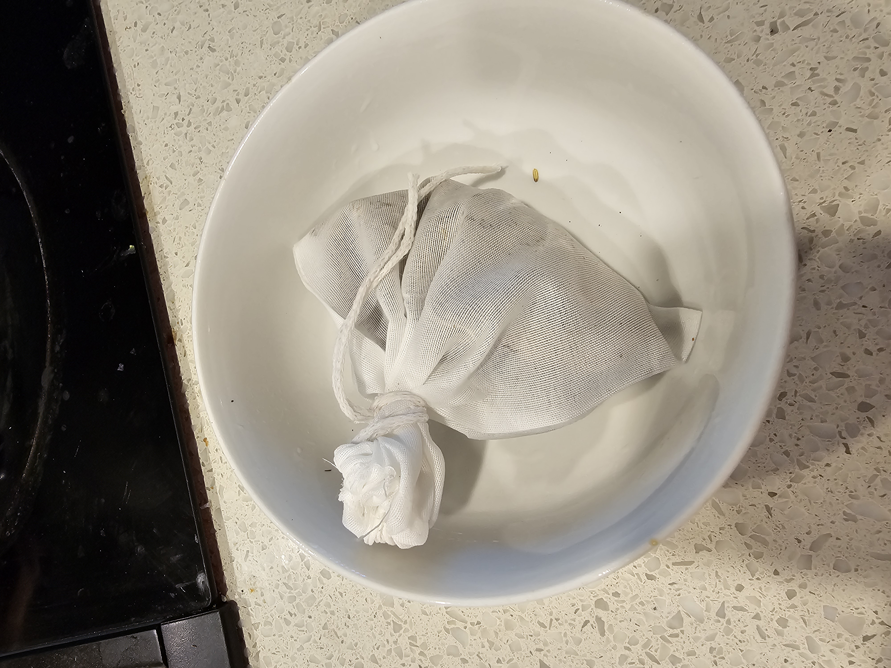
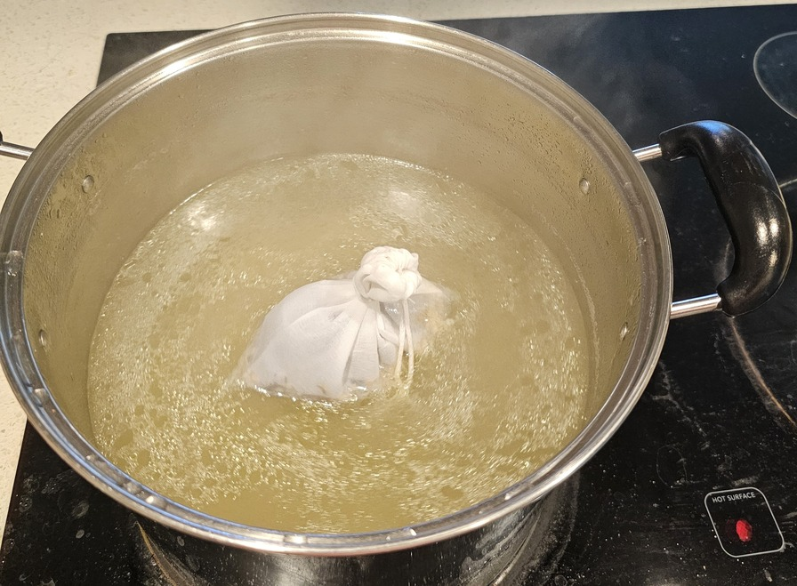
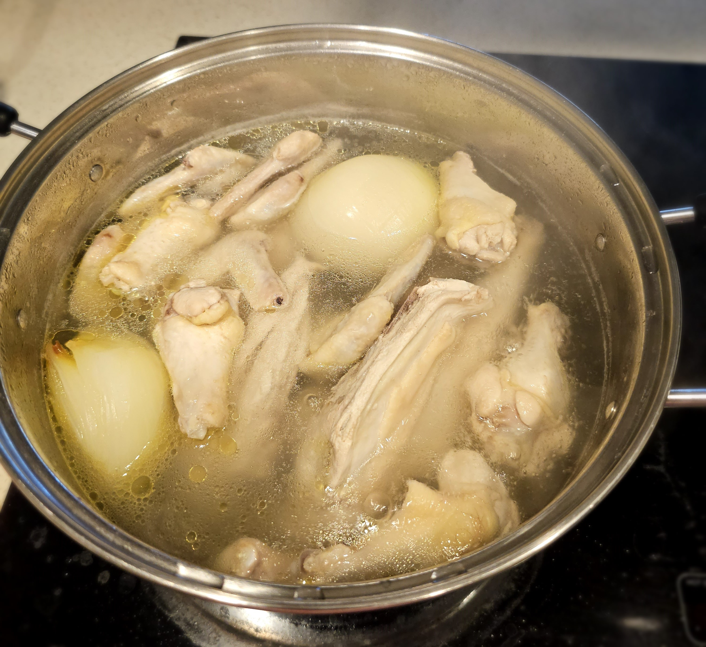

Chicken Pho
Craving a comforting and flavorful meal in a cold day? Look no further than Chicken Pho (Phở gà). This Vietnamese noodle soup boasts a rich and aromatic broth simmered for hours with chicken, ginger, star anise, and other fragrant spices. Thin rice noodles provide a delightful textural contrast, while tender shredded chicken adds a satisfying protein element. Fresh herbs like cilantro, mint, and bean sprouts bring a burst of color and freshness to the bowl. A squeeze of lime adds a touch of acidity, and a sprinkle of chili flakes provides optional heat. Each spoonful is a symphony of flavor and texture, making Chicken Pho a beloved Vietnamese classic.
- 1 whole chicken, cut into pieces
Chicken wings and thighs (Optional)
- 1 yellow onion, charred
- 2-inch piece of ginger, peeled and bruised
Spice Seasoning
- 8 cups water
- 1 pound (450g) bone-in, skin-on chicken thighs
- 1/2 cup fish sauce (adjust to taste)
- 1 tablespoon sugar
- 1 (16-ounce) package dried rice noodles
- Cilantro, mint, and Thai basil (optional)
- Bean sprouts (optional)
- Lime wedges (optional)
- Sriracha or chili oil (optional)
- Roast the Aromatics: Preheat your oven to 400°F (200°C). On a baking sheet, toss the onion (cut into wedges), ginger (sliced), garlic (whole), star anise, cloves, and cinnamon stick with a drizzle of oil. Roast for 15-20 minutes, or until slightly browned and fragrant
- Input the Roasted Aromatics in a bag
- Make the Broth: In a large pot, add the roasted aromatics, and water. Bring to a boil, then reduce heat and simmer for about 1 hour
- Add Chicken: Add the whole chicken pieces and chicken thighs to the pot. Simmer for another 30-45 minutes, or until chicken is cooked through
- Strain and Season: Remove chicken and set aside to cool slightly. Strain the broth into a clean pot, discarding the solids. Season the broth with fish sauce and sugar to taste
- Shred Chicken: Once cool enough to handle, shred the chicken meat from the bones.
- Cook Noodles: Cook the rice noodles according to package instructions.
- Assemble: Divide the cooked noodles among bowls. Top with shredded chicken and ladle hot broth over the to
- Garnishes: Serve with fresh herbs like cilantro, mint, and Thai basil (if using). Add bean sprouts, a squeeze of lime, and a drizzle of sriracha or chili oil (optional) for extra flavor and heat.